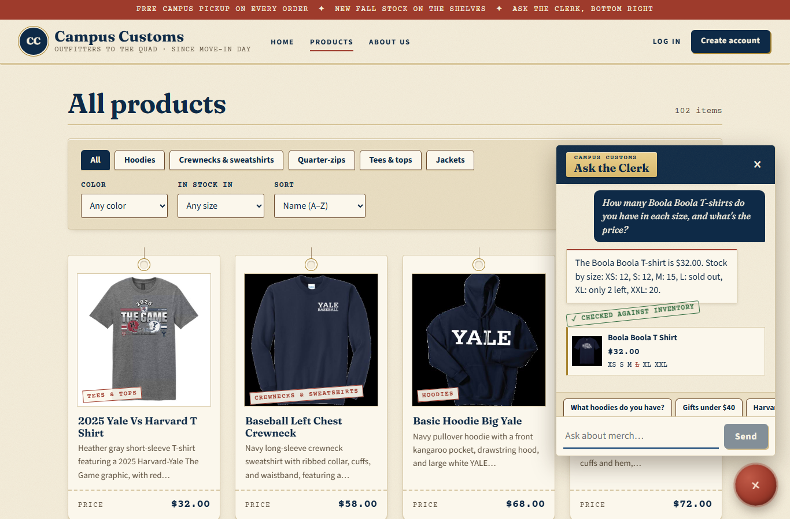
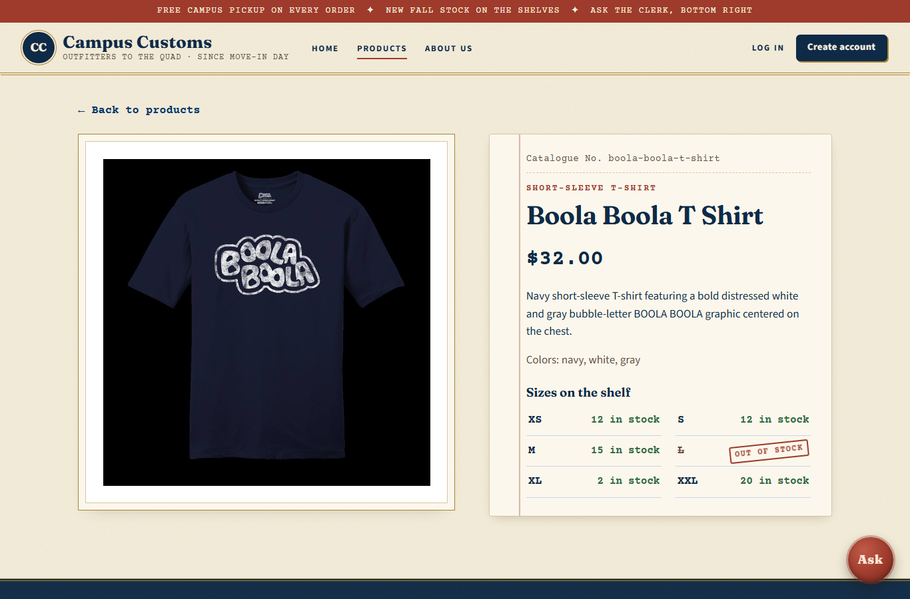
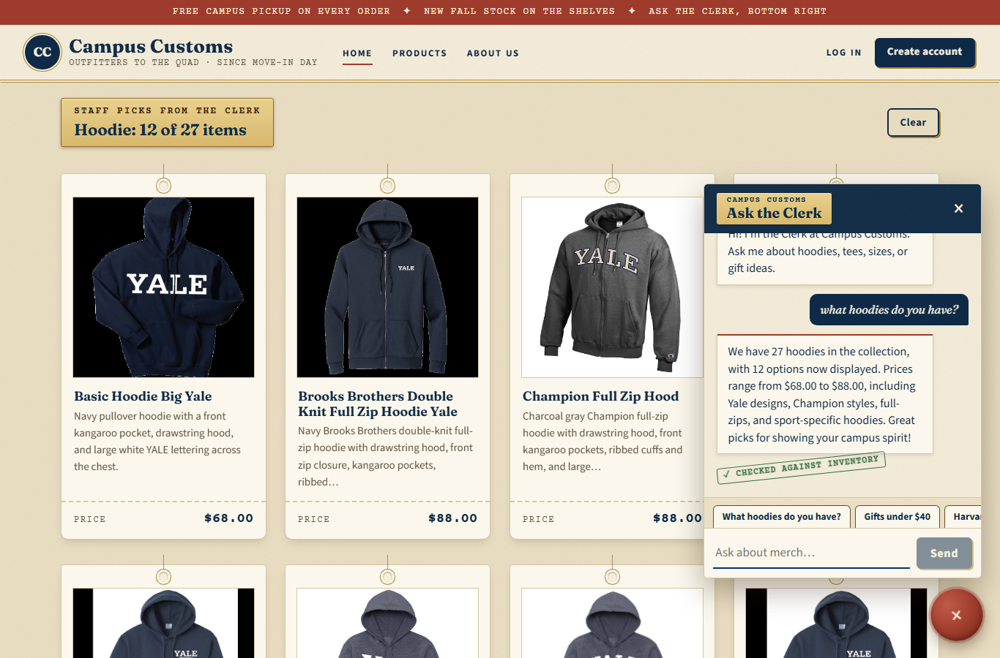
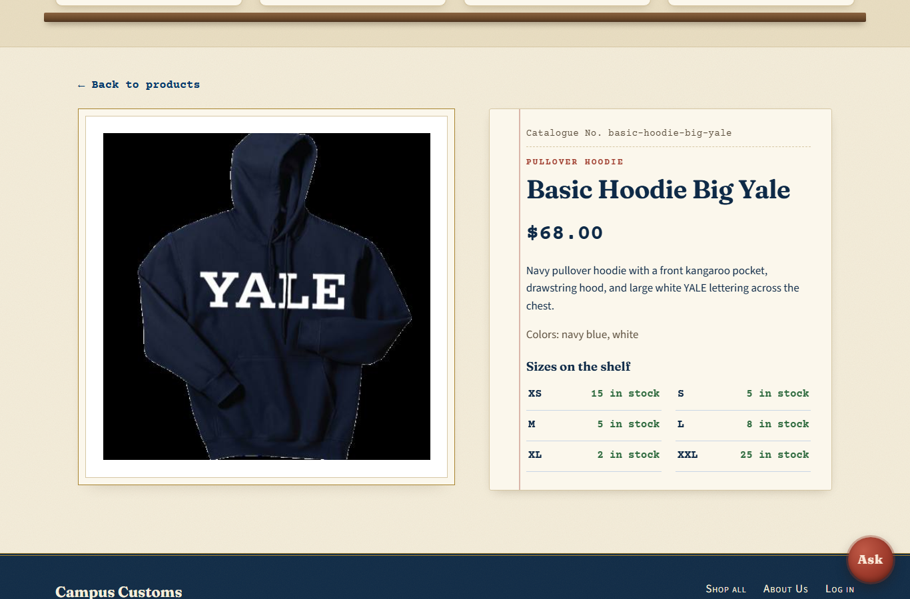
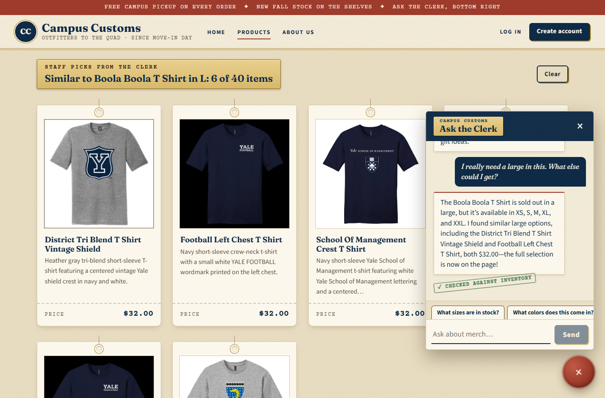

1. Chat checks the inventory level of an item Pass
The item is the Boola Boola T Shirt, which is sold out in L. For reference, here is what the database (catalogue and inventory tables) says at test time:
| Price | XS | S | M | L | XL | XXL |
|---|---|---|---|---|---|---|
| $32.00 | 12 | 12 | 15 | 0 | 2 | 20 |
1a. The chat's answer

1b. The same item's product page, for comparison

2. Dynamic search-result cards after a category question Pass

2b. A search card opens the single-item page

3. Usability feature: "Similar items in your size" (Problem 9, B1) Pass

find_alternatives, which put six similar T-shirts on the shelf. The table below confirms each suggestion is really in stock in L.| Suggested item | L in stock (database) |
|---|---|
| District Tri Blend T Shirt Vintage Shield | 8 |
| Football Left Chest T Shirt | 2 |
| School Of Management Crest T Shirt | 2 |
| School Of Nursing Crest T Shirt | 15 |
| Track Field Left Chest T Shirt | 25 |
| Grace Hopper Logo T Shirt | 8 |